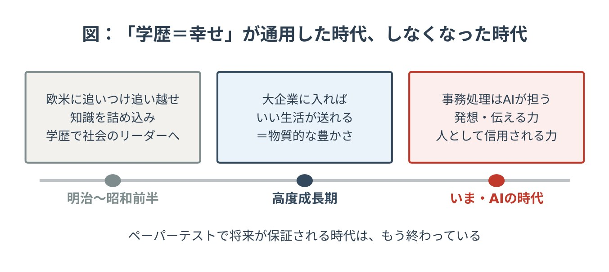
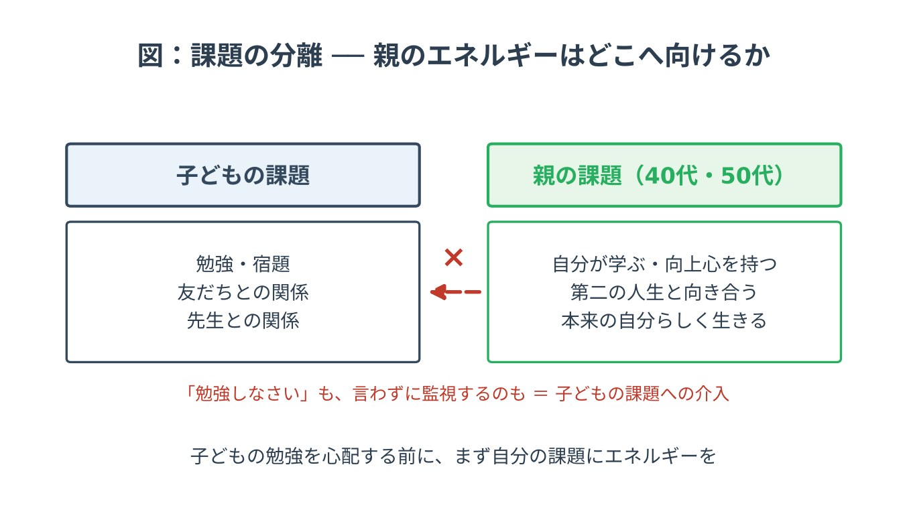

私はこのチャンネルを始めて、もう100回以上を超えました。高校の教員や学習塾の経営をして、45年ほど教育に携わってきました。たくさんの生徒を教え、たくさんの親御さんと話をしてきた立場から、このチャンネルでお伝えしたいのは、親の皆さんの、お子さんに対する教育のあり方、お子さんを導く上での心構えです。
子どもの成長を望まない親はいません。しかし私は、日本の親の教育はかなり特殊だと思っているんです。
第一部 ── 「学歴＝幸せ」が通用した時代、しなくなった時代
歴史をたどると、日本が近代化した明治以降、「欧米に追いつき追い越せ」というスローガンのもとで、子どもに学歴をつけさせることが、後の人生の幸せにつながると固く信じられてきた時代が、ずっと続いてきました。けれど150年ほど経って、教育の内容も、社会に出てからどう役立てるかも、どんな考え方で過ごしていけばいいのかも、ずいぶん変わっています。上級の学校を出て学歴を身につけたからといって、すぐに幸せが手に入る、社会的に成り上がる ── そういう時代では、もうなくなっているんです。
日本には、貧しかった時代が二度あります。一つは近代化が始まった明治時代。明治維新というある種の革命が起こり、欧米の物質文明に驚愕した日本は、追いつかなければ列強の植民地にされるのではないかという恐怖感に駆られて、ひたすら物質文明を追い求めました。その手段が教育です。先進国の知識や社会システム、文化を早く取り入れなければならないと、とにかく最初は詰め込んでいく教育だった。そして学歴を手に入れ、大学を出れば若くして社会のリーダーになれる。そんな時代が、明治の後半から昭和の前半まで続きました。
もう一つは、敗戦後です。昭和30年代から始まる高度経済成長に向けて、やはり物質的に貧しい日本がやってきて、大企業に就職できればいい生活が送れる、物質的に豊かになることが幸せである ── それが国民の総意、全体的なスローガンでした。
それが今、物質的には追いついた。1960年代の半ばに日本がGDPで世界第2位になった頃には、物質的な追求はもう達成されたと言えると思います。欧米的な知識を詰め込む形で始まった日本の教育 ── 知識を詰め込んでペーパーテストに受かれば合格、それがステータスになっていくという考えは、もう通用しない時代になっているんです。

§1 ── いまも多い、「テストのため」の悩み
前置きが長くなりましたが、なぜこんな話をしているかというと ── 私は今でも学校の先生の研修や学習塾の先生方の研修をさせていただき、お子さんや親御さんとも話すのですが、未だに「中間・期末が悪いんですけど」「子どもが勉強しないので、どうしたら勉強しますか」「ゲームばかりやっています」。そういうご質問が、非常に多いんです。
笑ってはいけないのですが、正直に言うと、私はかなり滑稽に感じています。あまりにも目先すぎる。ペーパーテストでいい点数を取ると将来が保証されるという考え方は、ありえない時代ですし、それは昭和40年代だって50年代だって、この40〜50年、ありえなかったんです。
確かに、高度成長の時や、戦前の大学に行く人が少なかった時代には、短期間にたくさん覚えて、インプットしたものをそのまま正確にアウトプットする能力が必要なときはありました。しかし今は、いかに新しい企画を、新しいニーズを考えるか、という時代にシフトしている。ペーパーテストに詰め込んだだけでは、社会が必要としない人間になってしまう。
§2 ── 「5教科まんべんなく」は、求められていない
私はよく言うのですが、5教科まんべんなく、全教科でよい点数を取る ── これは社会が、企業が、一番求めていない人材になっているんです。まんべんなくできるということは平均してできるということで、逆に言えば、本当の得意分野を持っていないということにもなりかねない。このチャンネルでも何度か言いましたが、突出した能力にお金を出す会社はあっても、平均にお金を出す会社はない。
具体的に言います。学校の勉強ができる生徒というのは、もちろん頭がいいということもありますが、それ以上に身につけているのは、事務処理的な能力です。記憶し、きちんと分類し、分析し、教えられた通りに物事をこなしていく。そういうタイプの人間を作るには、学校の勉強は適しているんです。
しかし今、そういう事務処理能力的なものは、AIが全部やってしまう。今でもそうなのだから、10年後、20年後、皆さんのお子さんが社会に出た頃に、事務処理能力がある人がトップになるということは、ちょっとありえないんです。
では何か。いろんな人と話して思うのは、やはりAIにはできない仕事です。人間関係を調整する能力。自分の言いたいこと、自分の発想を、自分独自の言葉で人々に分かりやすく伝える力。チャレンジ精神を持って、その時代の一番の問題を解決する方策を考えつき、それを共有できる力。一言で言えば、人間として信用される、自分の考えていることをみんなと共有できるリーダーシップ、コミュニケーション能力を持っている人。そういう人になるように、今、親は子どもに対して努力したほうがいい。私はそう思っています。
第二部 ── 勉強してほしいなら、親が学びなさい
では親はどうすればいいのか。私がいつも提案していることがあって、これは実証済みです。シンプルに言います。
まず、子どもに勉強してもらう、勉強好きになってもらうことが必要です。自分の興味関心のあることに意欲的に取り組み、失敗を恐れない、向上心のある子どもを育てていくこと。そういう子どもになってほしいのであれば ── 親御さんには厳しい言い方になるかもしれませんが、こういうことです。
子どもに勉強してほしいのなら、親であるあなたが、勉強好きになってください。勉強してください。子どもに向上心を持ってほしいのなら、あなたこそが向上心を持ってください。
耳が痛いでしょうか。セミナーでこの話をすると、親御さんは皆さんうつむいてしまいます。でも、おかしいでしょう。自分は何もしたくないけれど、子どもにはいろんなことをやらせたい。自分は学んだり知識を得たりする努力はしたくない。これでは、子どもは絶対に勉強意欲のある子にはなりません。
早期教育といって、二、三歳の頃から勉強を教えたり、英語塾に行かせたり、高額な教材を買ったり。つまり親は自分が努力せずに、子どもに何かをやらせて、負荷を与えている。これはある種の強制です。言葉はきついですが、下手をすると「教育虐待」1という言葉もあります。
親はある程度エネルギーを使わなければいけない。でもそれは、子どもに何かしてやろう、ではなく、自分が何かをすることにエネルギーをかけてほしいのです。
第三部 ── 課題の分離
オーストリアの心理学者アドラーは、最近『嫌われる勇気』という本で少し有名になりましたが、私は40年前から言っています。アドラーの心理学には教育に関する話が非常に多く、すごく重要な概念に「課題の分離」2があります。人それぞれに課題があって、その課題に干渉してはいけない、干渉すると人間関係を壊してしまう、ということです。
子どもには子どもの課題があります。小学生・中学生なら、学校に行っていますから、勉強すること、学校での友だち関係、先生との関係。そして当然、親には親の課題がある。今、向き合うべき問題が、絶対にあるはずです。
子どもが宿題をやらない、勉強しない、家に帰ってきてもソファーで寝転がって、試験が近いのに何もやらない ── そこに「勉強しろ」「宿題をやれ」と干渉することは、子どもの課題に干渉することになります。子どもの課題に介入すると、まず人間関係が良くならない。これが大前提としてあります。
そして、「勉強しなさい」と言っておきながら、勉強はなぜするのか、勉強する意義は何なのか、勉強することで将来の自分がどう伸びていくのか ── そういう本質的な話をしないまま「テストがあるからやれ」というのは、強制です。強制であり、子どもに対するコントロール欲求です。表面的に聞かないでほしいのですが、ある種の「毒親」になりかねない。

§3 ── 「言わずに我慢」も、子どもには伝わっている
セミナーでこう言うと、「先生に『勉強しなさい』とあまり言うなと言われたから、言わないようにしていたら、ますますやらなくなりました」という親御さんがいて、笑ってしまうんです。はっきり言って、それはそうでしょう、と。
課題の分離というのは、親が自分のことにエネルギーを割かなければいけない、ということです。「勉強しなさい」と言うのをやめて、我慢して、腹の中は煮えくり返っている ── それは、思いっきり監視しているじゃないですか。口に出さないだけで、子どもに命令しているのは同じ。潜在意識のレベルでは、完全に子どもに伝わっています。口に出すほうがまだ罪がないくらい、ひどいことなんです。
これはダブルスタンダードにもなります。「しなさい」と言わない代わりに、「いいのよ、勉強しなくても。その代わり、もう塾のお金は出さないからね」「第一志望はどうせ受からないからいいわよ」。そういう皮肉を言って子どもをいたぶる。何にもなっていません。
第四部 ── 40代・50代の課題は、第二の人生
では「親が自分のことをやれ」とは、どういうことか。小中学生、思春期の子どもの親は、40代、50代 ── 30代の方もいるでしょう。30代ぐらいまでは、社会に適応するためにいろいろ努力されてきたと思います。やっと社会に適応し、社会の常識を身につけることが「大人になった」ということになる。ところがその間、自分の本当の欲求や、本当にやりたいことを、抑えてきた。人の顔色をうかがうあまり、自分の本音を言わないできている、忖度の世界でもあるわけです。
そうなると、50を過ぎてからだんだん行き詰まってくる。そういうときに、第二の人生を取り戻す、本来の自分らしく生きるということが、40代・50代の課題になるんです。ですから私は必ず、こう言うようにしています。
子どもの勉強のことを心配する暇があったら、自分のことを心配してください。
この点は、今日お話しする余裕がないので、改めてお話しします。今日は一つだけ ── 課題の分離。子どもに「勉強しろ」と強制することは、子どもの反発するエネルギーを高めるだけだということを、覚えておいてほしいと思います。
次回は、「信じて手放す」四つの心がけ
次回は、親がこれをやれば子どもは勝手に学び始める ── 信じて手放す、四つの心がけについてお話しします。
ご家庭で試してみてください
この講話を「読んで終わり」にしないために、今日から試せる小さな三つを置いておきます。
1. 自分が今、学んでいることを一つ、口に出して言えるか確かめる。
言えなければ、まずそこからです。資格でも本でも、仕事の外のことでも構いません。
2. 「勉強しなさい」を飲み込んだ日に、自分の腹の中を観察する。
言わなかったことと、手放したことは別です。煮えくり返っているなら、まだ介入しています。
3. 子どもに「なぜ勉強するのか」を、自分の言葉で話してみる。
テストがあるから、では話になりません。うまく言えないなら、それが親の側の課題の入口です。